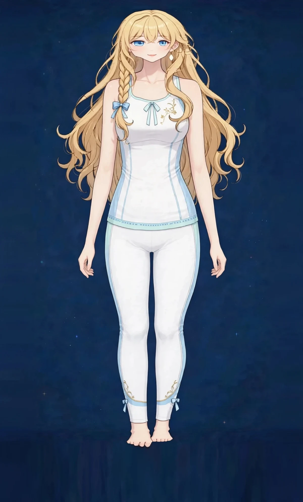
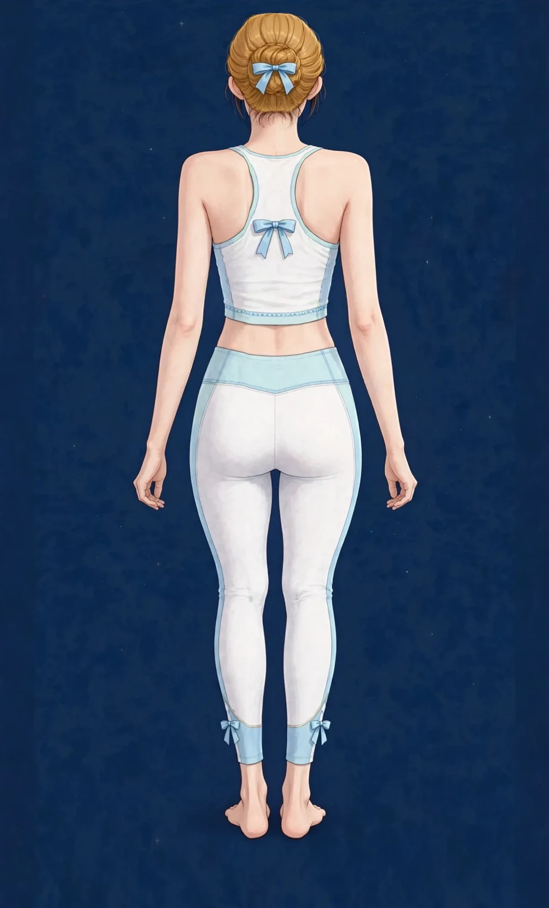
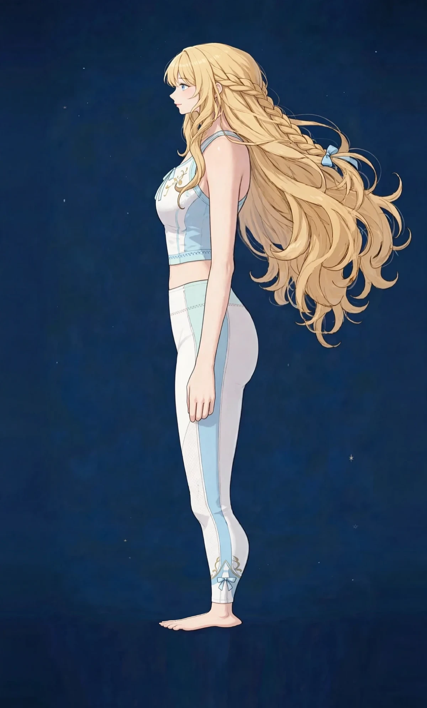

三ノ宮で肩こりケアこり・張り

デスクワークで固まる肩の張りに。神戸・三ノ宮のステラスピカでは、東洋医学の見立てをもとに、その日の状態に合わせて施術を組み立てます。
東洋医学から見た考え方
肩まわりの張りは、東洋医学では「気・血」の巡りの滞りと関係が深いとされます。同じ姿勢が続くと巡りが滞り、重さや張りとして感じやすくなります。
関係する部位の目安は、図1のとおりです。
図1｜肩こりで張りやすい肩・肩甲骨・背中（背面）

当店でのケア
おすすめ：オイルマッサージ
首から肩、肩甲骨まわりを深い圧でほぐし、巡りを意識して流します。胸を開く部位も合わせてケアします。
ご自宅でのセルフケア
1時間に一度、肩を大きく回し、胸を開く深呼吸を。湯船で首の付け根まで温めるのも巡りの助けになります。
セルフケアで意識したい場所と動きは、図2のとおりです。
図2｜肩回しと首を温めるセルフケア（横向き）

キーワード：肩こり肩の張りデスクワーク肩甲骨
肩こりのケアは90分 10,000円。開院後のご予約時に「肩こりが気になる」とお伝えください。
動画で見るセルフケア
このページのセルフケアは、動画でも紹介しています。動きの流れを確認しながら、無理のない範囲でどうぞ。